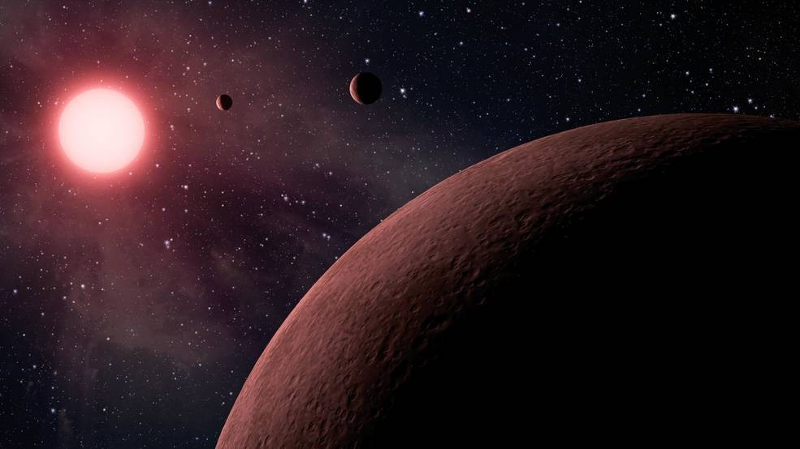

Cientistas da NASA recriam em laboratório a atmosfera de exoplanetas
Por Renato Mota, Canaltech

Cientistas do Laboratório de Propulsão a Jato da NASA (JPL) estão criando uma atmosfera alienígena aqui na Terra, com o objetivo de simular as condições atmosférica de exoplanetas.
Para o estudo, os pesquisadores do JPL utilizaram um forno de alta temperatura para aquecer uma mistura de hidrogênio e monóxido de carbono a mais de 1,1 mil graus Celsius (a temperatura da lava derretida), como nos exoplanetas chamados de "Júpiteres quentes".
“Embora seja impossível simular em laboratório exatamente esses ambientes exoplanares rigorosos, podemos chegar muito perto”, explicou o cientista-chefe do JPL, Murthy Gudipati, que lidera o grupo que conduziu o novo estudo, publicado no mês passado no Astrophysical Journal.
Júpiteres quentes são gigantes gasosos que orbitam muito perto de sua estrela-mãe — diferente do que acontece no nosso Sistema Solar. Essa proximidade com uma estrela faz com que as temperaturas atmosféricas desses planetas variem entre 530°C a 2.800°C ou mais.
“Em comparação, um dia quente na superfície de Mercúrio (que leva 88 dias para orbitar o Sol) atinge cerca de 430°C. Enquanto a Terra leva 365 dias para orbitar o Sol, os Júpiteres quentes orbitam suas estrelas em menos de 10 dias”, explica o comunicado da NASA.
No experimento, a equipe de pesquisadores começou com uma mistura química hidrogênio gasoso e 0,3% de monóxido de carbono, moléculas extremamente comuns no universo e nos primeiros sistemas solares. Essa mistura foi aquecida entre 330°C e 1.230°C e ainda exposta a uma alta dose de radiação ultravioleta – semelhante ao que um exoplaneta experimentaria orbitando tão perto de sua estrela-mãe.
De acordo com o JPL, a luz UV provou ser um ingrediente potente, responsável por alguns dos resultados mais surpreendentes do estudo sobre a química que poderia estar ocorrendo nessas atmosferas super quentes. Em particular, a formação de aerossóis — partículas sólidas suspensas na atmosfera.
Por serem grandes para o padrão planetário, Júpiteres quentes irradiam mais luz do que os planetas mais frios, o que favorece a coleta de informações sobre suas atmosferas. Pesquisadores já sabiam que planetas desse tipo têm atmosferas opacas em altas altitudes, o que pode ser explicado pela presença de nuvens, mas elas não deveriam se formar nas camadas onde a pressão atmosférica é muito baixa.
Além das nuvens, os cientistas achavam que aerossóis podiam explicar essa opacidade. Entretanto, não era sabido como os aerossóis poderiam se desenvolver nas atmosferas quentes dos exoplanetas. Luz ultravioleta era o ingrediente que faltava.
“Esse resultado muda a maneira como interpretamos essas atmosferas quentes de Júpiter", disse Benjamin Fleury, cientista pesquisador do JPL e principal autor do estudo. “No futuro, queremos estudar as propriedades desses aerossóis. Queremos entender melhor como eles se formam, como eles absorvem a luz e como reagem a mudanças no ambiente. Todas essas informações podem ajudar os astrônomos a entender o que estão vendo quando eles observam esses planetas”.
Água
Outro resultado surpreendente do estudo foram as quantidades significativas de dióxido de carbono e água produzidas pelas reações químicas. Acreditava-se que o vapor d’água só pudesse ser encontrado em atmosferas mais ricas em oxigênio do que em carbono. O novo estudo mostra que a água pode se formar quando o carbono e o oxigênio estão presentes em quantidades iguais, na forma de monóxido de carbono.
Enquanto um pouco de dióxido de carbono se formou sem a adição de radiação UV, as reações aceleraram com a adição da luz estelar simulada. “Esses novos resultados são imediatamente úteis para interpretar o que vemos nas atmosferas quentes de Júpiter”, disse Mark Swain, cientista planetário do JPL, co-autor do estudo. "Nós assumimos que a temperatura domina a química nessas atmosferas, mas isso mostra que precisamos observar como a radiação desempenha um papel."
Com ferramentas como o Telescópio Espacial James Webb, da NASA, com lançamento previsto para 2021, os cientistas esperam produzir os primeiros perfis químicos detalhados de atmosferas de exoplanetas. Os primeiros candidatos são os Júpiteres quentes, que podem ajudar a explicar como outros sistemas estelares se formam e como eles são semelhantes ou diferentes do nosso.
Fonte: JPL/NASA